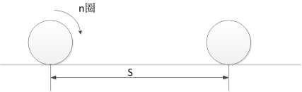
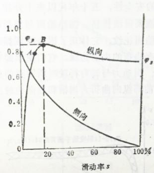
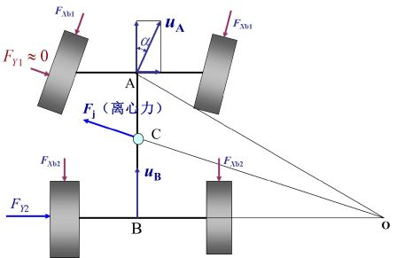
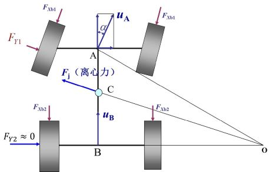
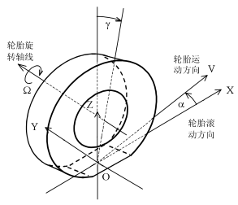
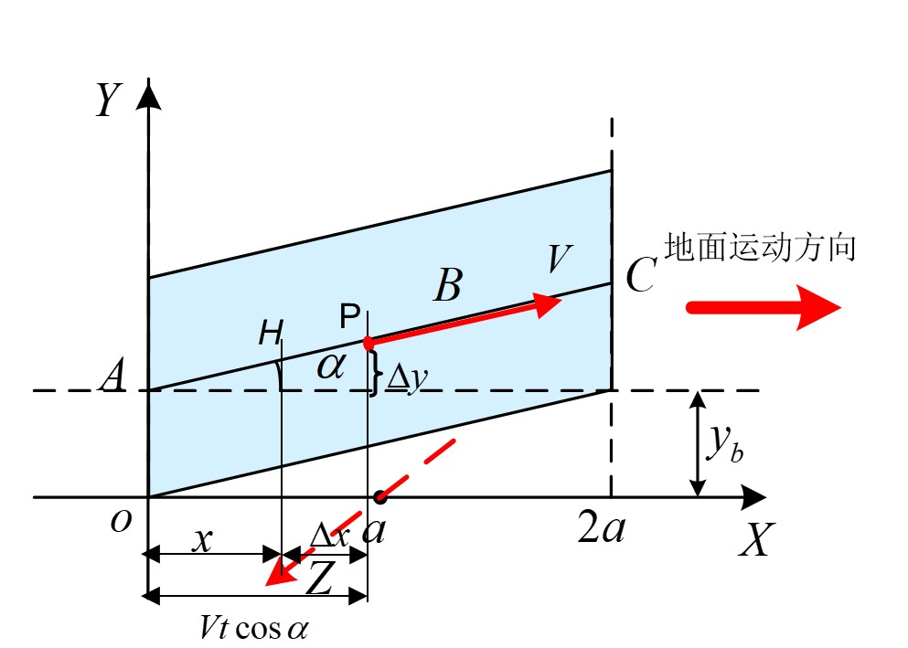

车辆动力学¶
第一章 轮胎模型¶
车辆侧向力学基础¶
（一）附着力、计算牵引力和牵引力¶
附着力：由作用在驱动轮上的转矩引起的，地面对车轮产生的能用于驱动车轮前进的最大切向力。
- 附着重：车轮受到的法向向下的载荷
- 附着系数：附着力与附着重的比值
- 附着率：地面对车轮的驱动力与附着重的比值
- 附着系数是最大驱动力和附着重的比重，附着率是驱动力与附着重的比值
- 附着系数同时与路面和车轮特性有关
计算牵引力\(F_j\)：由动力系统力矩计算得到的作用于车轮的牵引力（驱动力）。
- 当计算牵引力大于附着力的情况下，车轮会打滑
附着力、计算牵引力和牵引力\(F\)的关系
- 当\(F_j < F_{\varphi}\)时，\(F = F_j\)
- 当\(F_j = F_{\varphi}\)时，\(F = F_\varphi\)
- 当\(F_j > F_{\varphi}\)时，\(F < F_j\;\;\;\;F=\mathrm{附着重}\times \mathrm{附着率}\)
车辆的加速度为
- 当忽略空气对车辆的下压力\(F_{ag}\)时
（二）轮胎的三种半径¶
自由半径\(R_0\)：轮胎充足气，且不受外力时的半径
静力半径\(R_s\)：轮胎装到车上，车辆静止时，车轮中心到路面之间的垂向距离。
滚动半径\(R\)：根据车轮转动圈数n与实际车轮中心移动距离s之间的数学关系换算所得半径。

（三）纯滚动、滑转与滑移¶
纯滚动\(v = \omega R_0\)
滑转\(v < \omega R_0\)
滑移\(v > \omega R_0\)
滑转情况下，滑转率\(s = (\omega R_0 - v)/(\omega R_0)\)
滑移情况下，滑移率\(s = (v - \omega R_0)/v\)
滑转率与滑移率统称为滑动率。

- 驱动情况下，滑动率为1，代表了车辆打滑
- 制动情况下，滑动率为1，代表了车辆抱死
前轮抱死时，\(F_{y1}=0\)，\(F_{y2}\)与\(F_j\)构成的力矩具有减小转向作用的能力，即使车辆失去转向能力，但汽车处于稳定状态。

后轮抱死时，\(F_{y2}=0\)，\(F_j\)与\(F_{y1}\)构成的力矩具有增大转向作用的能力，容易出现甩尾，汽车将急剧转动，处于不稳定状态。

（四）轮胎坐标系¶

车轮平面：垂直于车轮旋转轴的轮胎对称面
X轴：车轮平面与地面的交线，沿车辆前进方向为正
坐标原点O：X轴与车轮旋转轴线在地面投影线的交点
Z轴：过O点垂直于地面向上的线
Y轴：过O点，垂直于XOZ平面的线，方向与X、Z轴服从右手螺旋定则
侧偏角：轮胎前进方向与X轴的交角
（五）轮胎的侧偏特性¶
- 侧偏现象
- 侧偏特性
\(k_y\) -侧偏刚度
特点：总体呈非线性，但在小范围内接近线性关系；侧偏刚度随垂向载荷增大呈现先增大后减小的变化趋势
- 低速转向时，转向轮摆角可以很大，因此侧偏角对转向半径影响较小
- 高速转向时，转向轮摆角一般都很小，小于1度，此时侧偏角对转向半径的影响就很突出。
（六）回正力矩¶
- 车辆静止时受到的侧向力不会产生拖距
- 车辆运动时候会产生一定的拖距，从而产生回正力矩\(M_z\)
- 车辆受到侧向力较大的时候，轮胎拖距会变大
- 车辆受到的非常大的侧向力时候，拖距变小到为零
此处插入一张图片
- 回正力矩导致车辆的前轮的转向半径半大，导致后轮的转向半径变小
特点：
- 侧偏角增大，回正力矩呈现先增大后减小的变化趋势，当侧偏角增大到一定值后，回正力矩将变为负值
- 回正力矩与垂向载荷有关，载荷越大，侧偏刚度越大，则回正力矩越大。
1.2 轮胎纵滑和侧滑下的简化模型¶
轮胎模型的定义：
- 反应轮胎力学性能（所受侧向力、纵向力以及回正力矩等）与侧偏角和运动状态（滑转率和滑移率）关系的数学模型
（一）简化模型的假设条件¶
轮胎的四个组成部分
- 胎面层、带束层、胎体、轮辋
四个假设条件
- 胎体只存在沿y方向的变形，变形量为\(y_b\)
- 胎面存在x和y方向的变形,接地印迹各位置的纵向与侧向胎面变形刚度相同
- 沿x方向，接地印迹的最前与最后端到y轴的距离相等
- 在接地印迹内各点的运动方向一致

假设胎面上的一个点，从\(A\)点开始与地面接触，经过\(t\)时间后，运动到\(P\)点，则\(P\)位置的x方向为
假设车轮作纯滚动，则该点从\(A\)处开始，经过\(t\)时间后运动到\(H\)位置，定义\(H\)位置的\(x\)方向坐标为\(x\)
在\(P\)点胎面沿\(x\)方向的变形量为\(\Delta x=x'-x = vt\cos \alpha - x\)
在\(P\)点胎面沿\(y\)方向的变形量为\(\Delta y=vt\sin \alpha\)
在制动工况下
- 定义变量-制动滑移率\(s_b\)(brake)
在驱动工况下
- 在驱动工况下\(\Delta x = x' - x < 0\)
- 定义变量-驱动滑转率\(s_d\)(drive)
通过推导可以得出
1.3 轮胎侧偏特性的半经验模型¶
- 特点：半经验模型是反应轮胎侧偏特性的稳态模型，其不能反应出轮胎的动态响应特性
1.4 轮胎的swift模型¶
- 考虑了轮胎环和轮辋之间的变形阻尼
- 考虑了胎体左右两个面之间的变形刚度和阻尼
- 考虑接地处沿垂线方向、侧向以及纵向的变形，在接地处引入了垂向、侧向以及纵向的刚度
- 轮胎接地处的侧偏模型采用了“魔术”模型，以模式模型计算出来的力和力矩作为轮胎动力学模型的输入
第二章 悬架系统特性¶
- 悬架的构成
弹性原件（弹簧）：缓冲能量
阻尼元件（减震器）：消耗能量
导向杆系（连杆）：运动协调
- 悬架的类型
根据左右两个半桥是否联结在一起，区分为非独立悬架和独立悬架。
独立悬架中根据横臂的数量又可分为单横臂和双横臂独立悬架。
2.1 扭杆弹簧¶
特点：结构简单、工作可靠、单位质量变形能大，在履带车辆和轮式车辆上有着广泛应用
可以看出，当车辆在转向的情况下，车辆存在一个抵抗车辆侧倾的角度
（一）主要参数¶
- \(d\)-扭杆直径
- \(L\)-扭杆工作长度
- \(a\)-摇臂长度
- \(\alpha_0\)-摇臂的初始安装位置与水平线的夹角
- \(\alpha\)-车轮受力后摇臂与水平线的夹角，规定在水平线以下为正，水平线以上为负
- \(s\)-车轮垂向位移
- \(F\)-车轮垂向所受外力
（二）刚度分析¶
其中：
可以看出当\(\alpha = 0\)的时候，力臂最长，刚度最小
（三）扭杆弹簧刚度的影响因素¶
- 扭杆直径\(d\)越大，刚度越大
- 扭杆工作长度\(L\)越大，刚度越小
- 摇臂长度\(a\)越长，刚度越小
- 工作位置\(\alpha\)的影响
2.2 油气弹簧¶
2.2.1 油气弹簧概述¶
-
不同路面对悬架刚度的需求不同：好的路面需要弹簧刚度小一些，坏路面要求弹簧刚度要大一些，因此需要车辆 在动行程大的时候，刚度大一些，动行程小的时候刚度小一些
-
系统组成：由油室、气室和活塞组成
- 工作介质：液压油，气体
- 工作过程：当车轮向上运动时，其将带动活塞网上运动，活塞推动液压油压缩气室中气体，气体受压后体积变小，压力增大，并与负载平衡。
- 油气弹簧的优点：悬架动行程小时，其刚度小；动行程大时，其刚度也大；带阻尼阀的油气弹簧，具有减振器的功能，可以省去单独的减振器
- 油气弹簧的分类：气室数量：单气室油气弹簧，双气室油气弹簧、具有反压气室的油气弹簧、可调式油气弹簧
- 双气室油气弹簧的工作过程：当动行程较小时，低压气室工作；当动行程较大时，高、低压气室共同参与工作
- 具有反压气室的油气弹簧工作过程：压缩行程时，一个气室受压，压力升高，而另一个气室体积膨胀，压力减小；反行程时，过程相反
- 反压气室的特点：可以阻碍车轮的快速下落，解决单气室油气弹簧反行驶工作时活塞易脱缸的问题
- 可调式油气弹簧的特点：能实现位姿调节，提高车辆的通过性
2.2.2 单气室油气弹簧¶
主要参数¶
- \(A_e\)-主活塞的面积
- \(V_0,p_0,h_0\)-气室的初始体积、初始气压和初始气柱高度，\(h_0 = V_0 / A_e\)
- \(V,p\)-活塞运动\(s\)之后，气室的体积和压力
刚度推导¶
根据热力学基本定律可以得到
第三章 转向轮和前轴的横摆¶
3.1 陀螺效应¶
（一）定义¶
力学中的陀螺就是除能绕自转轴线转动外，还能绕其他轴线转动的刚体
（二）陀螺的自转动量矩¶
- 质点动量矩：质点动量对转动轴之矩，表达式为
\(r\)-质点到转动轴的矢径 \(v\)-质点的速度矢量
\(\Omega\)-质点绕转动轴的角速度矢量
- 陀螺自转动量矩：陀螺对自转轴线的动量矩
方向与自转角速度方向相同
（三）陀螺的动量矩定理¶
- 陀螺对主轴公转质点O的动量矩定理：绕共轴支点O转动的陀螺，其对O点的动量矩变化率等于作用在陀螺上的锁喉外力对O点的力矩的代数和
对于高速转动的陀螺，陀螺对公转支点O的动量矩L，可近似用陀螺对自转轴线的动量矩H来代替。
若没有外力的情况下，角动量矩守恒
第七章 关键部件动力学模型¶
发动机激励模型¶
发动机激励转矩 = 平均转矩 + 波动转矩